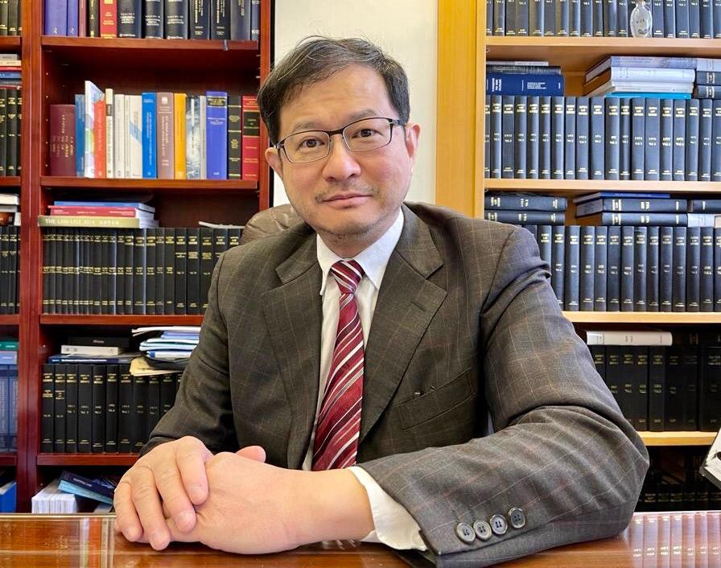

主任律师 (创办独资人)
梁景威律师是本所的创办人，早在1988年在香港毕业。他在1988年取得英国伦敦大学法学硕士学位，1992年取得香港大学工商管理硕士。在1997年，香港回归祖国之前，他已主动地钻研中国大陆法律并在1997年取得中国政法大学的法学学士，在2002年取得北京大学法学硕士。
梁律师是英国皇家仲裁司学会、香港和新加坡仲裁司学会的资深会员。他亦是在殊多国际仲裁机构的名单员，包括：香港国际仲裁中心、新加坡国际仲裁中心、中国国际经济贸易仲裁委员会、中国海事仲裁委员会、韩国商事仲裁会、马来西亚吉隆坡地区仲裁中心等。
他最近的出版物包括2019年1月在《中国法学》出版有关于仲裁的 “Exercise Of Residual Discretion under Article V Of The New York Convention By Enforcement Court When Award Is Alive Dead And Undead”
在公司融资领域的其他贡献包括2014年出版于《牛津亚洲商业体系手册 （2014）》的“牛津亚洲商业体系手册–香港：混合资本主义作为催化剂”，由戈登·雷丁教授，吉尔伯特·黄和梁景威律师所撰写。在企业重组、清算方面，梁律师自从2001年，由香港高等法院和香港破产管理处的共同委任担任清盘人对破产公司进行资产清算。
在2016年，梁景威律师被颁发予讼辩律师*的资格，可以出席香港所有的高级法院(包括香港终审法院)陈词申辩[见香港律师会通告16-857]。
在2020年，梁景威律师被聘请为广东法院粤港澳大湾区跨境商事纠纷特邀调解员。（见聘书）
*讼辩律师有较高级法院出庭发言权，能在竞争事务审裁处、高等法院及终审法院的民事法律程序享有出庭发言权 (《法律执业者条例》（香港法律第159章,第39Q条）
執业的司法地域:
名单仲裁员
| 年份 | 机构 | 官方网站 | 详细资料 |
| 2008 | 英国伦敦海事仲裁协会 | www.lmaa.london/ | 详细资料 |
| 2009 | 英国皇家仲裁司学会 | www.ciarb.org | 详细资料 |
| 2011 | 中国海事仲裁委员会 | http://www.cmac.org.cn/en/ | 仲裁员证书 |
| 2012 | 中国国际经济贸易仲裁委员会 | www.cietac.org/?l=en | 详细资料 |
| 2013 | 新加坡国际仲裁中心 | www.siac.org.sg | 详细资料 |
| 2013 | 马来西亚吉隆坡地区仲裁中心 | klrca.org | 详细资料 |
| 2013 | 韩国商事仲裁院 | www.kcab.or.kr | 详细资料 |
| 2014 | 香港国际仲裁中心 | https://www.hkiac.org/arbitration/arbitrators | 详细资料 |
| 2014 | 武汉仲裁委员会 | http://www.whac.org.cn/ | 详细资料 |
| 2014 | 深圳国际仲裁院 | http://www.scia.com.cn/ | 详细资料 |
| 2015 | 青岛仲裁委员会 | http://www.qdac.org/n28356055/n32567873/index.html | 详细资料 |
| 2017 | 廊坊仲裁委员会 | https://lfac.org.cn/ | 详细资料 |
| 2018 | 纽西兰仲裁员调解员学会 | https://www.aminz.org.nz/ | 详细资料 |
| 2022 | 泰国仲裁中心,资深仲裁员小组 | https://thac.or.th/ | 详细资料 |
在国际仲裁机构担任委员会委员：
| 年份 | 机构 | 详细资料 |
| 2008 | 国际商会(总部位于法国巴黎) 担任国际商会之修改ICC仲裁规则的任务成员 http://www.iccwbo.org/products-and-services/arbitration-and-adr/中国仲裁证券会 |
详细资料 |
| 2013 | 香港证券及投资学会 | 详细资料 (1) 详细资料 (2) |
| 2015 | 中国仲裁法学研究会 | 详细资料 |
模拟仲裁庭
| 年份 | 机构 | 详细资料 |
| 2021 | 在模拟国际投资仲裁比赛（FDI Moot）（国际赛）担任仲裁员 | 详细资料 |
